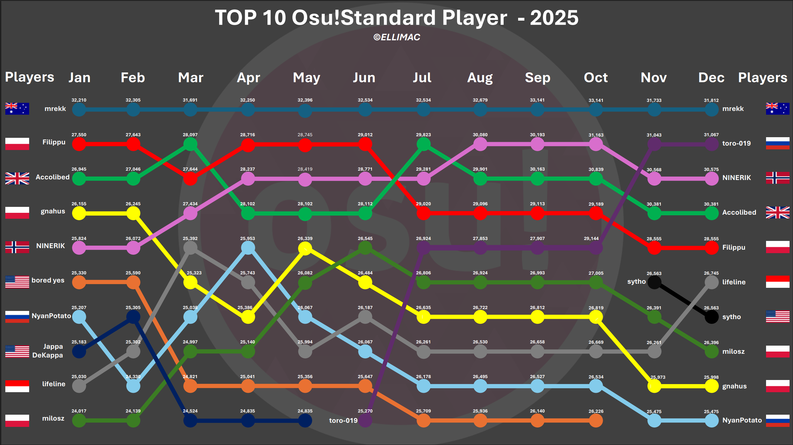
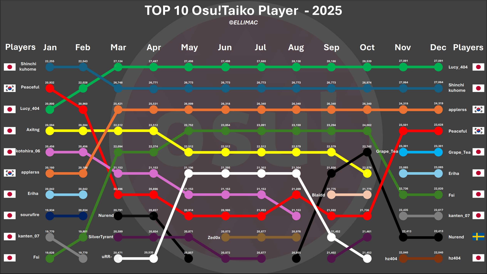
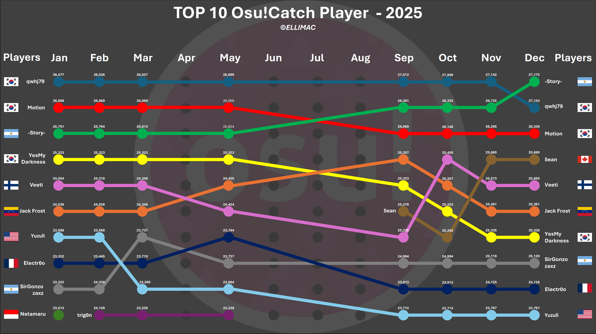
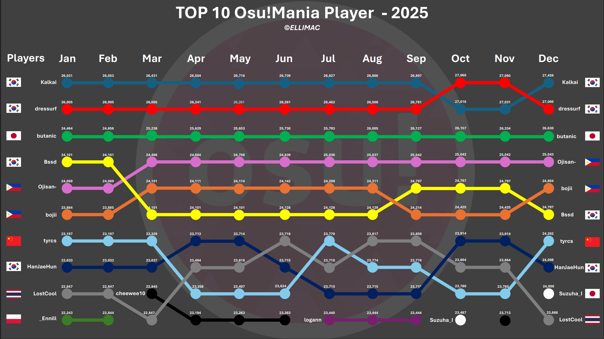

This page gathers some of my analytical work across different domains such as games,
semiconductors, business and telecom. Use the filters below to focus on a specific topic.
Filter by domain
Filter by game
Top 10 osu! Players · 2025 (All Modes)
Games · osu!
Published: Jan 2026 ·
Based on: monthly Top 10 snapshots in Standard, Taiko, Catch & Mania (2025)
These four charts display how the Top 10 evolved across each osu! mode throughout 2025.
Taiko remains the most stable at the top, while Standard and
Catch show more position changes over the year.
Mania highlights strong late pushes where several players climb multiple spots
near the end of the season.




Here, I explore how top osu!Standard players evolve month by month in 2025.
The chart below shows the percentage change in PP (Performance Points) compared to the previous month,
highlighting momentum shifts, slowdowns, and the impact of key rework periods.
The chart is interactive — click a player in the legend to hide or show their curve and explore trends player by player.
2025 Osu!Standard Top 10 Players - PP Growth (%) Per Month
Below, I summarize how much each top osu!standard player improved (or declined) in terms of PP over the course of 2025.
This bar chart shows the overall percentage growth in performance points from January to December, making it easy to compare long-term momentum and consistency between players.
Account Creation and Long-Term Activity: 2007–2025
Games · osu!
Published: May 2025 | Updated: Jan 2026 ·
Based on: Osu!Standard Players from 2007 to Today · Focus: time-series, rank evolution, skill growth
A comprehensive dataset covering over 40 million players with 28 features each, spanning the entire history of osu! from its inception in 2007 to the present.
Published: Jun 2025 ·
Based on: Dragon Quest III HD-2D Remake bestiary · Focus: monster progression scaling, game balance, difficulty curve
This scatterplot visualizes every enemy in Dragon Quest III HD-2D Remake based on their
Health Points (HP) and the Experience Points (XP) they award when defeated.
Each point on the chart represents a monster, allowing us to observe how durability and reward scale together
throughout the game.
Long-term trends in GPU specifications (1986–2026)
Semiconductors
Published: Nov 2025 ·
Based on: GPUs Specs From 1986 to 2026 · Focus: performance evolution, memory, power
Analysis of GPU architectures over four decades: performance per watt, memory capacity,
process nodes and segment positioning, highlighting key inflection points in the industry.
 Over the Year.png)